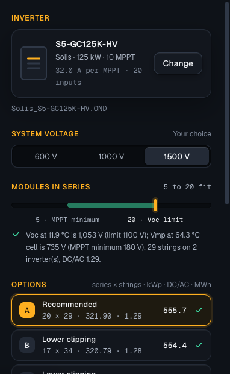
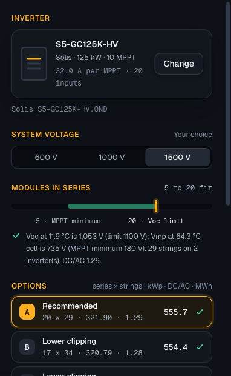

The headings of the input panels in the primary action's orange at weight 600. No line under them; which shadow: none, a dark one, or a soft glow of their orange. The Strings lens as the app draws it, desktop.
A · No line, no shadowThe heading in color-heading at 600, nothing under it

D · No line, a dark shadowtext-shadow 0 2px 3px, black at 95 %: on this ground it barely shows

E · No line, a soft orange glowtext-shadow 0 2px 8px, the heading's orange at 35 %